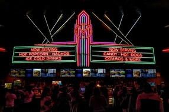
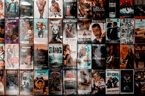

Explorando el mundo del cine
Descubre los estrenos más recientes, las reseñas de los clásicos y las curiosidades del séptimo arte.
Bienvenido a Cine de Hoy y Siempre
Somos un sitio dedicado a los amantes del cine, donde encontrarás información sobre estrenos, críticas, recomendaciones y películas clásicas que marcaron historia.
Explora nuestra selección de películas, desde los grandes clásicos hasta los últimos estrenos en cartelera.
Actualizamos continuamente nuestro contenido para ofrecerte noticias, análisis y curiosidades sobre todas tus películas favoritas.
Últimas Reseñas
-
Una Batalla Tras Otra
La última película de Paul Thomas Anderson con actores de la talla de Leonardo Di Caprio o Sean Penn nos centra en el complicado presente de un ex revolucionario.
-
Close
Este drama, dirigido por Lukas Dhont nominado al Oscar Internacional en 2022, cuenta la historia de amistad entre dos adolescentes, en el curso en que entran al instituto.
-
Mary And Max
Esta película de animación stop-motion que sigue la improbable amistad por correspondencia entre Mary, una niña australiana solitaria, y Max, un hombre con síndrome de Asperger en Nueva York, explora temas de aislamiento, conexión y crecimiento personal.